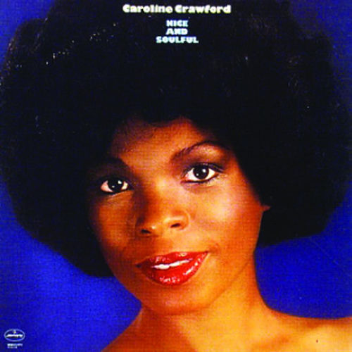

Caroline Crawford
Caroline Crawford is an American rhythm and blues, pop, soul, and disco singer who recorded as Carolyn Crawford for Motown Records in the early-mid 1960s, and for other labels later in her career.
Complete Discography & Tracklists (3)